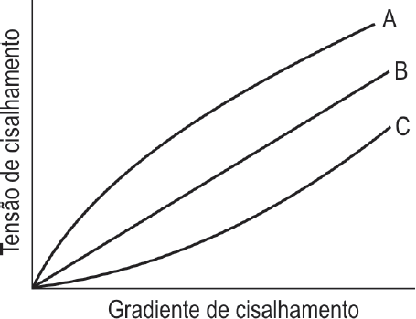
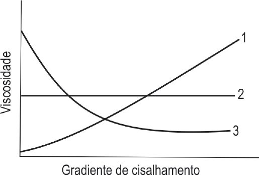

A reologia consiste no estudo do escoamento ou deformação
de um material quando submetido a uma tensão. Estudos
reológicos são importantes na pesquisa, no desenvolvimento,
na seleção, na produção e no controle de qualidade de
produtos farmacêuticos. Nesse sentido, considere os dois
reogramas a seguir.


Em relação ao comportamento de fluxo, é correto interpretar
que o material representado, no primeiro reograma, pela
-
curva A tem comportamento de fluxo pseudoplástico,
desejável em preparações injetáveis, estando relacionado
com a viscosidade representada pela curva 3 do segundo
reograma.
-
curva B tem comportamento de fluxo dilatante, estando
relacionado com a viscosidade representada pela
curva 1 do segundo reograma.
-
curva B tem comportamento de fluxo dilatante, importante
em xampus e condicionadores, estando relacionado
com a viscosidade representada pela curva 1 do segundo
reograma.
-
curva C tem comportamento de fluxo pseudoplástico,
característico em suspensões farmacêuticas, estando
relacionado com a viscosidade representada pela
curva 2 do segundo reograma.
-
curva C tem comportamento de fluxo dilatante, desejável
em pomadas, estando relacionado com a viscosidade
representada pela curva 3 do segundo reograma.